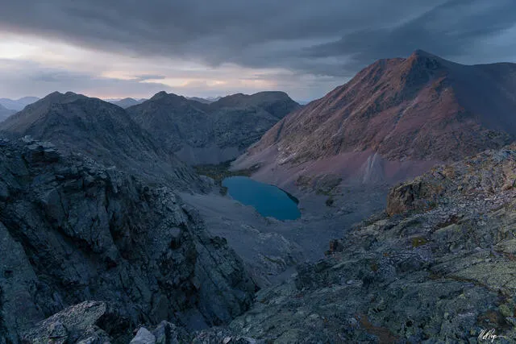

4 days ago
Post One
A mountain is an elevated portion of the surface of a planet, generally with steep sides that show significant exposed bedrock generally with steep sides that show significant exposed bedrock.

4 days ago
A mountain is an elevated portion of the surface of a planet, generally with steep sides that show significant exposed bedrock generally with steep sides that show significant exposed bedrock.